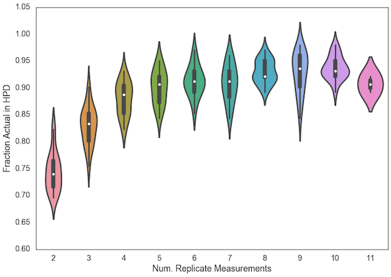

Collaborations Between Experimentalists and Statisticians
I just saw an awesome pair of blog posts by Roger Peng and Elizabeth Matsui, detailing how scientists and statisticians can work together more effectively. Highly recommended read! In the duration of my PhD, I've been one of two resident statisticians for our research group (it's a relative expertise thing - I know enough to be dangerous), and so the article really resonated with me. Here's my summary.
Firstly, both ought to take the time to learn each others' core concepts and methods. For the experimentalist, learn some basics about distributions of a random variable and what 'inference' really means beyond p=0.05 (FYI, p<0.05 ≠ inference). For the statistician, take the time to learn some of the basic (bio)chemistry, the experimental setup, and how difficult it is to collect data.
Secondly, have some patience! Both sides will need some time to learn the ins-and-outs of the data collection, analysis, inference reasoning process and the likes.
Thirdly, involve the statistician earlier on in a collaboration, not towards the end. The statistician can help make sense of the scientific question in terms of the data collected, and thus can help with the experimental design.
Fourthly, and this point really matters for PIs, give the statistician sufficient support, particularly on the grants. 1% effort doesn't cut it. Even 5% is on the low side of reasonable. Something more like 10-20% effort makes more sense.
Finally, a statistician's primary goal should be to advance the science through the proper deployment of statistics. A scientist's primary goal is to help identify the most important problems of a (sub-(sub-))field to solve. Together as collaborators, they can find the right experimental design towards this pair of goals.
I'll add in a pointer of my own here - as a statistician, it really shouldn't be about helping your scientist collaborator find "what's significant", which (ahem) often means p<0.05. My view of inference has, over the past year, turned Bayesian, and I'm now increasingly confident in the notion that Bayesian-style reasoning is not only the most natural way to reason through the data, it's actually the right way to do inference on scientific data. Given priors, some perhaps uninformative, about the state of nature, our goal in science is to compute the probability distribution over some parameters of nature.
Did you enjoy this blog post? Let's discuss more!
Reproducible PI Manifesto
I found this set of slides by Lorena Barba: the Reproducible PI Manifesto. I love it, and I hope other PIs take it up!
Did you enjoy this blog post? Let's discuss more!
Conference FinAid Packages
I've been thinking back on my experience being on the SciPy 2016 Financial Aid committee, having myself received a full scholarship to attend SciPy 2015.
I had a chance to talk with two of the SciPy scholarship recipients. They belonged to a trio that we really wanted to fund, but because of budget constraints and a desire to help more excellent applicants attend the conference, we had to drop one (the more experienced guy) from the list. It still gets to me sometimes, having to be part of the decision-makers that makes these "constrained decisions". I can't imagine, for example, making life-and-death decisions instead.
I later learned that the trio contacted their hosting organization, and using some leftover money that the other two were entitled to + some other leftover funds elsewhere, they were able to help the experienced guy come in to the conference. I'm not really good with words for emotions, so the only word that most accurately describes my feelings towards this is "wow". Relative to what I observe in modern North America, where I keep hearing about the constant fights for rights, this was a huge dose of self-sacrifice instead, and I was really moved.
On another note, I also learned that SciPy has one of the most generous financial aid packages available in terms of total dollars awarded. I hope this can continue; having money to disburse to purposefully bring people together is an investment in people that will pay off many fold non-monetary dividends elsewhere.
Did you enjoy this blog post? Let's discuss more!
Boxplot or Violin Plot?
The same data, different visualizations.
Here's the box plot version:

And here's the violin plot version.

Which is more appropriate, and why?
I think the Box Plot is more suited for clearly delineating ranges: (min, max), (IQR), and medians, whereas the Violin Plot is more suited for visualizing the distribution of data, including the possibility of bi-/multi-modality.
Did you enjoy this blog post? Let's discuss more!
Paper Review
I recently reviewed a paper for PLOS Computational Biology. This was my first ever scientific paper review, and so I did my best to be constructive and helpful to the authors, just as other reviewers were for my first lead author publication. I had seen stinging reviews of my colleague's work, those that made it look like the reviewer had an agenda and didn't bother reading the paper properly. Hence, I was determined to have this review not just objectively, but also constructively.
I also signed off on the review, having been convinced of the need for a more transparent review system. I'm not sure how much my single contribution will make, but I think it's still the right thing to do.
Because of confidentiality reasons, I can't discuss what the specific topic of the paper was, who the authors were, and what affiliation they had. However, I think I am allowed to describe (in broad general terms) some of the more prominent episodes of thought that went through my mind as I did the review. (If the editor contacts me at a later time and says this post isn't allowed either, I'll be the first to take it private into my own reflections...)
Essentially the manuscript was about a new algorithm as applied to biology. As I was writing the review, I was constantly reminded of some mistakes I had made early on in my PhD training w.r.t. computational work. The first was the need for simulation data, which was not provided. Another one was to avoid claims of computational efficiency unless I had conducted a formal analysis of my algorithm's order of complexity. The authors had made both of these mistakes, and I hope that my review pointed it out in a way that didn't "sting" (I've seen those, they hurt, my colleagues have been victims of those reviews before.)
One of PLOS Computational Biology's requirements for their journal article is that a new software method yields insight into some biological problem. My evaluation of the paper was that it wasn't clear what the biological problem was, and I thought it might help the authors by suggesting a few questions that I thought could be answered by their algorithm. As it turns out, the 2nd reviewer also concurred.
The 2nd reviewer had a sharper eye for statistical issues than I did. Looking back, I was clearly more focused on the algorithm and its utility; I had swept aside statistical issues, partly because of a lack of confidence. Thankfully the 2nd reviewer addressed the question of whether there was statistical evidence for confidence in the conclusions. Just from reading the reviewer's comments, I think I've learned more about how to approach the stats question.
I was sad, though, that the editors ultimately decided on a rejection; I had only requested for a major revision, and had tried my best to specify what would be necessary and what would be "good-to-have". The authors' topic is close to my heart, and I genuinely enjoyed seeing that there's a competing algorithm that worked faster than my own. Looking through Reviewer 2's comments, it must be the case that Reviewer 2 (who remained anonymous) recommended a rejection. I hope the authors find a good place to put their paper; the rejection always will sting, but I hope that at least I was able to help them make their work better.
Did you enjoy this blog post? Let's discuss more!